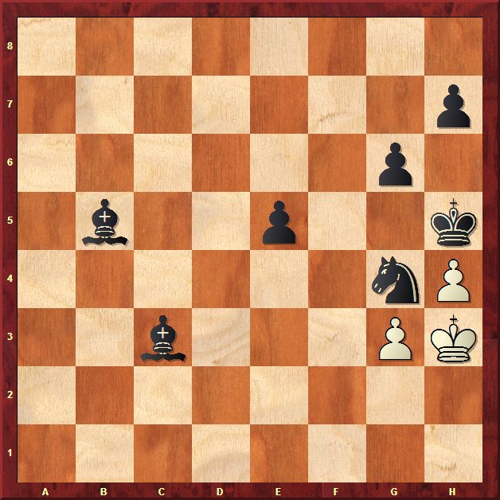

Agustin de Leitza Xake Elkartea |
| » hasiera » elkarteko bazkideak » taldekako txapelketa » azken txapelketak » loturak |
Billabonako pintxetak09-07-26Santiagoak ailegatu dira berriro eta azken urteak bezala berriro gonbidatu gaituzte pintxetak jokatzera Billabonan. Aurten ez dute Iosuk berriro irabaztea izan nahi eta antolatu dute taldeko txapelketa bat. Eta ez hori bakarrik, Gros gondidatu dute eta hauek, bazkaria nolakoa izango den jakinda, Santi Gonzalez ekarri dute, espero dezagun hurrengo eukal maisu internazionala izatea. Gure partetik, eta gaur Andoain izenarekin, Iosu, Claudio, Javi eta Aritz, Billabonan aurkeztu dira, aurreko egueko irudia hobetzeko. Espero zen bezala txapelkataren irabazlea Gros izan da nahiko erraz, Santi ez ezik, Olaizola eta Segovia ere etorri direlako, txapleketa osoan bakarrik 4.5 puntu galdu dute. Guk bigarren sailkatu gara, 3.5 puntuetara, baina txapelketa oso ona egiten, eta aurreko eguneko txapelketaren irabazleen, Zarauz, aurretik. Bereiztu nahi dugu Claudioren eta Javiren txapelketa, Claudiok bakarrik puntu galdu du eta Javik 1.5 puntu. Javik izan da egunaren anekdotaren protagonista, ez zen izan bakarra ikusi baititugu truko bat baino gehiago gaur. 
Azken segunduak ziren eta momentu
honetan Javik egin zuen partidaren mugimendu onena, itota ohikatu zuen!
Aurkariak eskua eman zuen eta denok bukatu ginen barre egiten, han
geundenok esan zutenean g2 libre zegoela.
Beti bezala bazkaria ezin hobea |